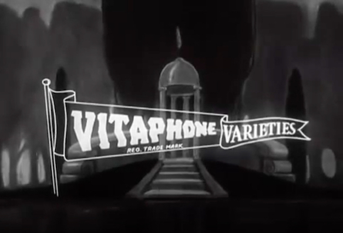
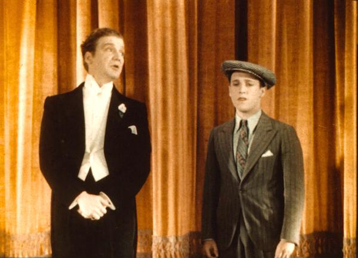
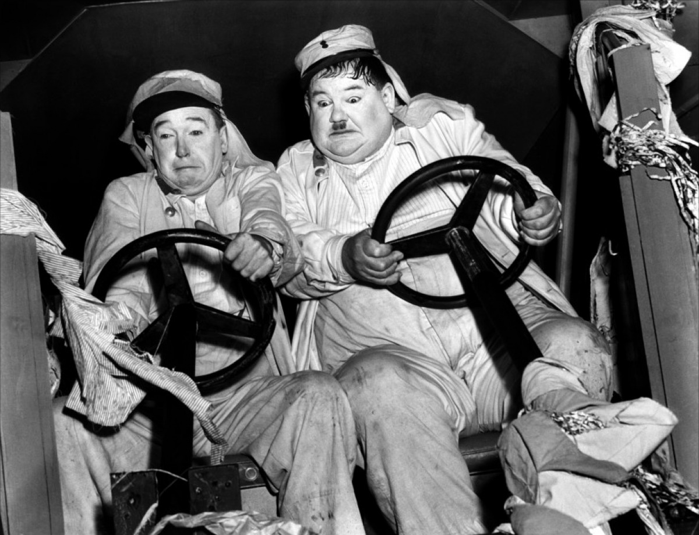
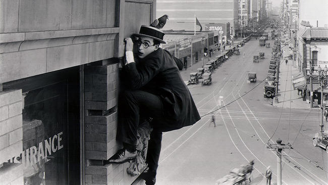
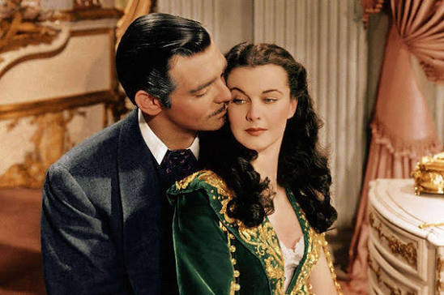
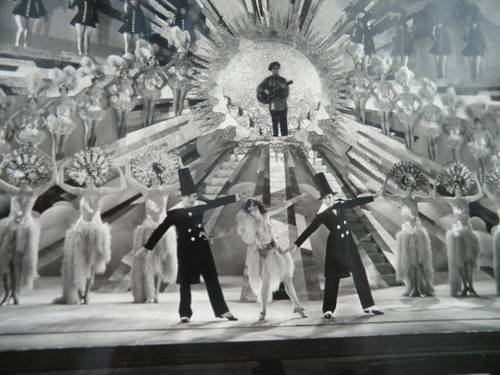

Conservation
Saving the Vitaphone shorts
Vitaphone sound lived on separate 16-inch discs. When reels and records parted ways, whole films fell silent. Newly matched shorts join the archive this month.
(The Golden Age of Moving Pictures)
The Hollywood Revue is a title for a community, passionate for the movies of the golden age of Hollywood movie production.
Whether it's the obscure, lost or partially complete archives, we work with current conservation efforts to recover any trace of film and make sure they aren't left to be forgotten.

Warner Bros. paraded nearly its whole roster of stars through this all-talking, all-singing revue, much of it in early two-colour Technicolor.
Learn more about The Show of Shows
Heartbroken Ollie drags Stan into the French Foreign Legion, and a stolen aeroplane sends them both spinning into the sky.
Learn more about The Flying Deuces
Harold Lloyd climbs a department store wall to win a bet, and ends up hanging from the most famous clock in cinema.
Learn more about Safety Last!
Scarlett O'Hara survives war and Reconstruction in the epic that won eight competitive Academy Awards, Best Picture among them.
Learn more about Gone with the WindJames Cagney and Humphrey Bogart play veterans of the Great War who turn to bootlegging in Raoul Walsh's Prohibition saga.
Learn more about The Roaring TwentiesStorefront theatres charging a nickel spread through American cities after 1905, and films grew from single shots into short stories with cuts, chases and camera tricks.
Seek out Dream of a Rarebit Fiend (1906), Edwin S. Porter. A man who ate too much Welsh rarebit watches his bed fly over the city, built from double exposures and miniatures.
The Nestor company opened Hollywood's first studio in 1911, and the industry soon followed the sunshine west. Features grew longer, and women directed some of the boldest work of the decade.
Seek out Suspense (1913), Lois Weber and Phillips Smalley. A one-reel thriller whose three-way split screen follows a mother, an intruder and a husband racing home.
Beyond Lloyd and Keaton, studios gave European newcomers room to experiment with moving cameras and colour tinting, right up until the talkies arrived in 1927.
Seek out Lonesome (1928), Paul Fejos. Two lonely New York workers meet at Coney Island in a part-talkie with hand-coloured sequences, long overlooked.
Until the Production Code was strictly enforced in mid-1934, studios turned out fast, frank pictures about money, desire and the Depression.
Seek out Employees' Entrance (1933), Roy Del Ruth. Warren William plays a ruthless department-store manager in a drama the censors would not have passed a year later.
While the major studios made morale boosters, small outfits on tiny budgets made the bleak crime pictures French critics would later call film noir.
Seek out Detour (1945), Edgar G. Ulmer. A hitchhiking pianist drifts into disaster in a cheap Producers Releasing Corporation picture now in the National Film Registry.
Studios fought television with CinemaScope and colour, while a few independents carried lightweight cameras out onto real streets.
Seek out Little Fugitive (1953), Morris Engel, Ruth Orkin and Ray Ashley. A small boy runs away to Coney Island; François Truffaut credited it with inspiring the French New Wave.
The studio system came apart, and in 1968 the Production Code gave way to the ratings system. Outside the studios, filmmakers recorded lives Hollywood had ignored.
Seek out The Exiles (1961), Kent Mackenzie. One night with young Native Americans in Los Angeles's Bunker Hill, barely seen for decades until the UCLA Film & Television Archive restored it.
Take a close look at the latest news and findings from our community.
No announcements match your search.

Conservation
Vitaphone sound lived on separate 16-inch discs. When reels and records parted ways, whole films fell silent. Newly matched shorts join the archive this month.
Advertisement
Our companion project collects the sounds of the era: early recordings, radio and the music that filled the picture palaces.

The Search
The 1929 hit that introduced “Tiptoe Through the Tulips” survives only in fragments. Its soundtrack is complete; the picture is not. Have you seen it?